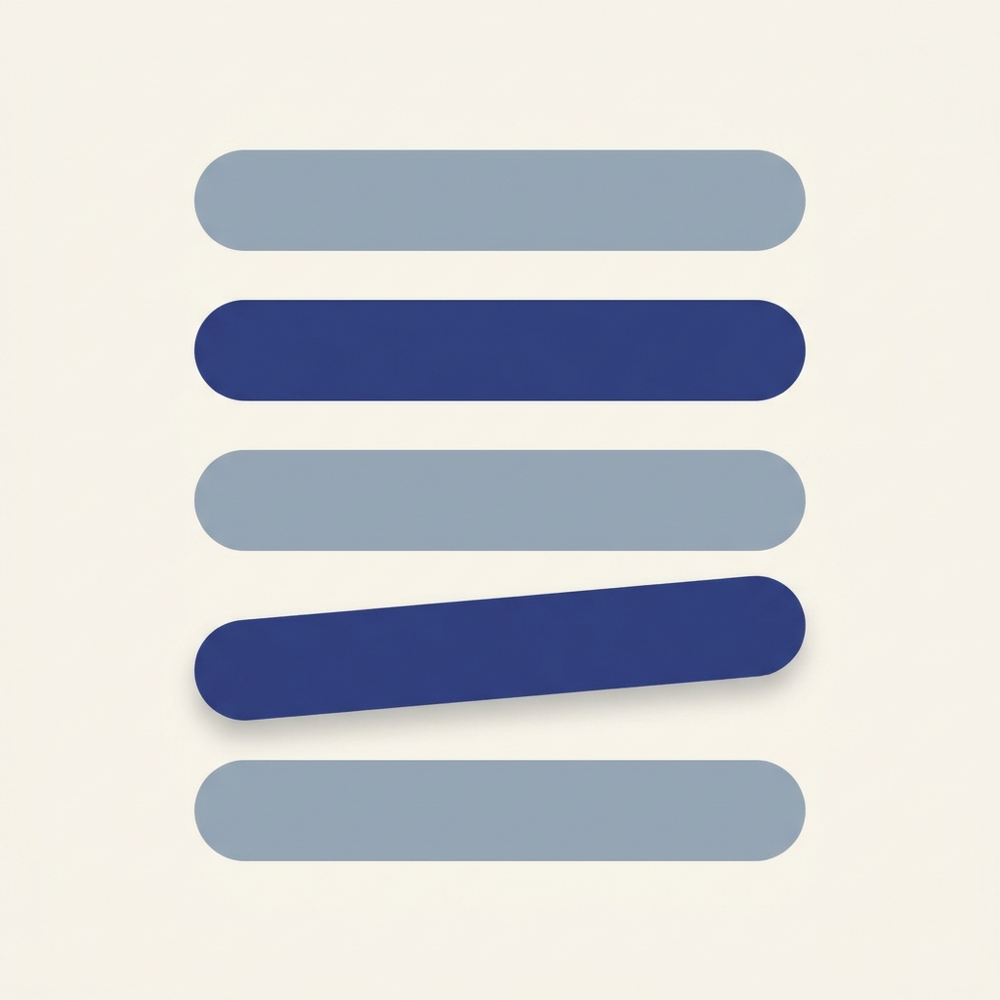

英語をやり直したいけれど、何度も挫折してきた方へ。マゼヨミは、今日すでに読むつもりだった日本語の記事に英語を少しだけ混ぜて、辞書を引かずに最後まで読み切るためのアプリです。前後の日本語が文脈になるので、英文の意味を推測しながら読み進められます。気になったらタップするだけで日本語に戻せます。新しい学習時間を作る必要はありません。
貼り付けてのミックス読みや文タップでの反転、混ぜ直しなど基本機能は無料で無制限に使えます。Pro（¥1,500・買い切り・サブスクリプションなし）では、つまずき語ノートの全件表示・復習キュー（次の記事でつまずいた語を優先的に英語化）・保存ライブラリの無制限化・単語のCSV書き出し・連続読み上げが使えるようになります。
ご質問・ご要望・不具合報告は、お問い合わせフォームよりお寄せください。
Mazeyomi mixes a few English sentences into the Japanese article you were already going to read, so the surrounding Japanese gives you context instead of a dictionary. Tap any English sentence to see it in Japanese. Translation runs fully on device (Apple's built-in translation) — once the language model is downloaded, no network connection is needed and your text is never sent anywhere.
Pasting and mixing, tap-to-flip, and remixing are free and unlimited. Pro (¥1,500, one-time purchase, no subscription) unlocks the full tripped-word list, the review queue, an unlimited saved library, CSV export, and continuous read-aloud.
The app collects no personal data and works fully offline. See the Privacy Policy.